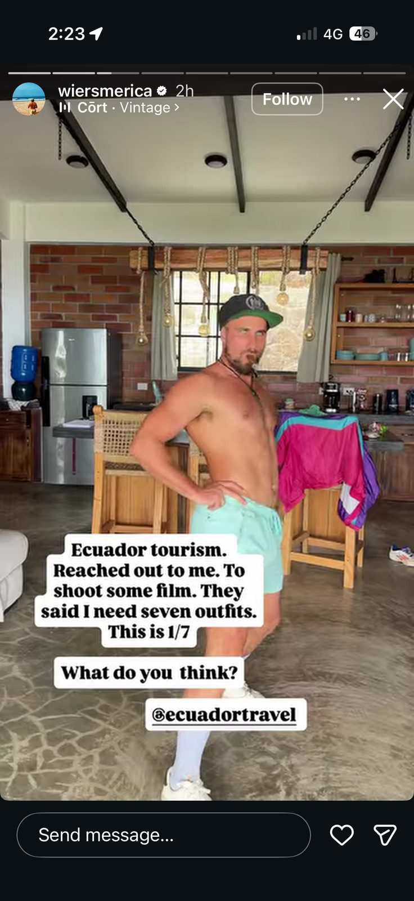

Ryan Wiersma, el canadiense que enseña a los extranjeros cómo sobornar para obtener permisos de construcción y de armas si no quieren someterse a un examen psicológico.
Ryan Wiersma - the Canadian who teaches foreigners how to bribe for building and weapons permits if they don’t want to take a psychological exam.
Documentación compilada a partir de transmisiones en vivo, redes sociales y declaraciones públicas.
Documentation compiled from live streams, social media and public statements.
👤 Perfil
👤 Profile
Nombre: Name: Ryan Wiersma
Origen: From: Edmonton, Alberta, Canada
Residencia: Living in: Manglaralto, Ecuador
📱 Redes sociales
📱 His socials
🌐 Sitio web (monetización)
🌐 His website where he monetizes this escapade
🎬 Vídeo corto – Se jacta abiertamente de que el soborno es genial en Ecuador
🎬 Short-form video where he openly brags about bribery being great in Ecuador
Vídeo corto en el que se jacta abiertamente de que el soborno es genial en Ecuador (todos estos enlaces son el mismo vídeo en distintas plataformas):
Short-form video where he openly brags about bribery being great in Ecuador (all these links are the same video just on different platforms):
💬 Declaración sobre corrupción
💬 Tweet (Deleted)
Captura del tweet (ahora eliminado) donde compara la corrupción de Ecuador con la de Canadá:
Screenshot of the deleted tweet:

“The best thing about the corruption in Ecuador compared to Canada. Is at least in Ecuador the corruption’s accessible to everybody. Not just the elite.”
📹 Fragmentos del Facebook Live
📹 Facebook Live excerpts
Clips del Facebook Live (solo fragmentos):
Facebook Live clips (excerpts only):
Transmisión completa grabada (archivo completo recuperado de un amigo):
Full recorded livestream (complete file recovered from a friend):
Marcas de tiempo relevantes Timestamps
Enlace original a la transmisión en vivo de Facebook (ahora eliminada): Original link to Facebook LIVE where he admits this (now deleted):
Extra – 5 puntos importantes
Extra – 5 important points
1. José Alejandro Vivar
Su amigo José Alejandro Vivar aparece varias veces en su perfil. Son buenos amigos. José tiene un negocio de Airbnb en Quito y es un delincuente convicto en Canadá. Posee doble nacionalidad canadiense y ecuatoriana.
His friend Jose Alejandro Vivar is featured many times on his profile. They are good friends. Jose owns an Airbnb business in Quito and is a convicted criminal in Canada. Jose is a dual Canadian-Ecuadorian citizen.
Instagram de José: Jose’s Instagram: instagram.com/_alejandrovivar_/
2. Colonizar países del tercer mundo
Ryan dice que colonizar países del tercer mundo es bueno:
Ryan says colonizing 3rd world countries is good:
https://www.tiktok.com/@ryanwiersma/video/7206056051131665670
3. Llama “retrasada” al 99% de la población de Ecuador
Tras ser descubierto, publicó esto calificando al 99% de la población de Ecuador de "retrasada".
After being exposed, he posted this calling 99% of the population in Ecuador “retarded”.
https://youtube.com/shorts/DoZjOHzd8-o
4. Perfil de negocio / Business profile
Su perfil de negocio (BrickHouse – Life In Ecuador):
His business profile (BrickHouse – Life In Ecuador):
https://www.facebook.com/p/BrickHouse-Life-In-Ecuador-61583870366766/
(Captura de pantalla del perfil de negocio – del documento original)
(Screenshot of the business profile – from the original document)
5. Trato con el Ministerio de Turismo / Deal with Ministry of Tourism
Publicó que el turismo de Ecuador (Ministerio / @ecuadortravel) lo contactó para filmar y le pidió siete outfits:
He posted that Ecuador tourism (Ministry / @ecuadortravel) reached out to him to shoot film and told him he needs seven outfits:

📍 Ubicación del asentamiento
📍 Location of illegal settlement
Asentamiento ilegal en Manglaralto, Ecuador:
Location of illegal settlement in Manglaralto, Ecuador:
-1.8528527, -80.7417518